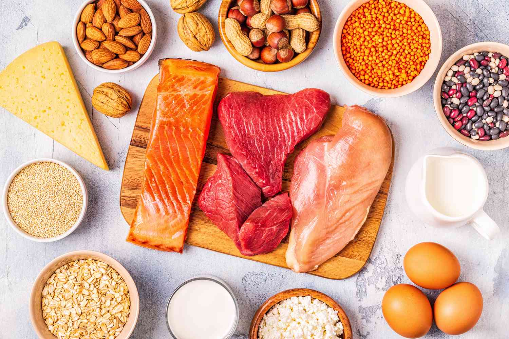

我的推荐
如果你想幫助你的健康生活，你可以常常喝水，吃有蛋白質的食物，每天吃三餐的健康的食物，還要小型不要吃太多不健康的東西。
常常喝水會幫你的血的溫度。吃有蛋白質的食物會給你力氣。每天吃三餐的健康的食物會幫你快快長大！你也要小型不要吃太多不健康的東西。

如果你想幫助你的健康生活，你可以常常喝水，吃有蛋白質的食物，每天吃三餐的健康的食物，還要小型不要吃太多不健康的東西。
常常喝水會幫你的血的溫度。吃有蛋白質的食物會給你力氣。每天吃三餐的健康的食物會幫你快快長大！你也要小型不要吃太多不健康的東西。
